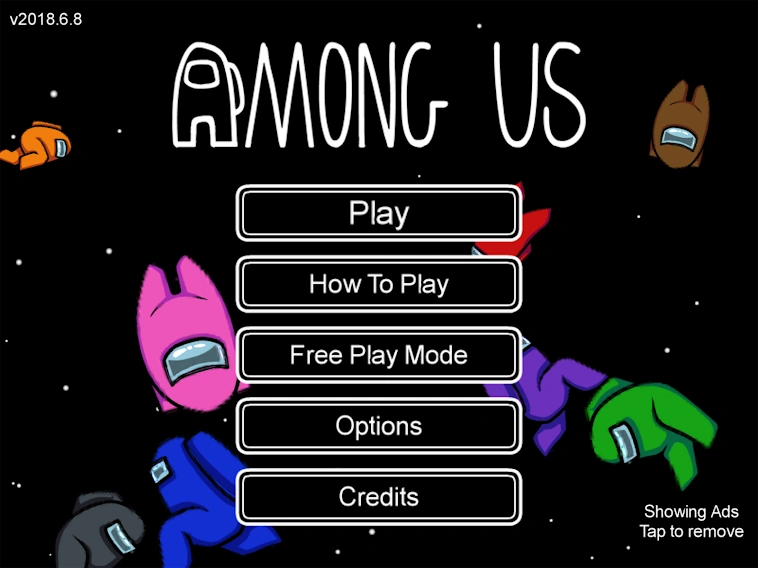
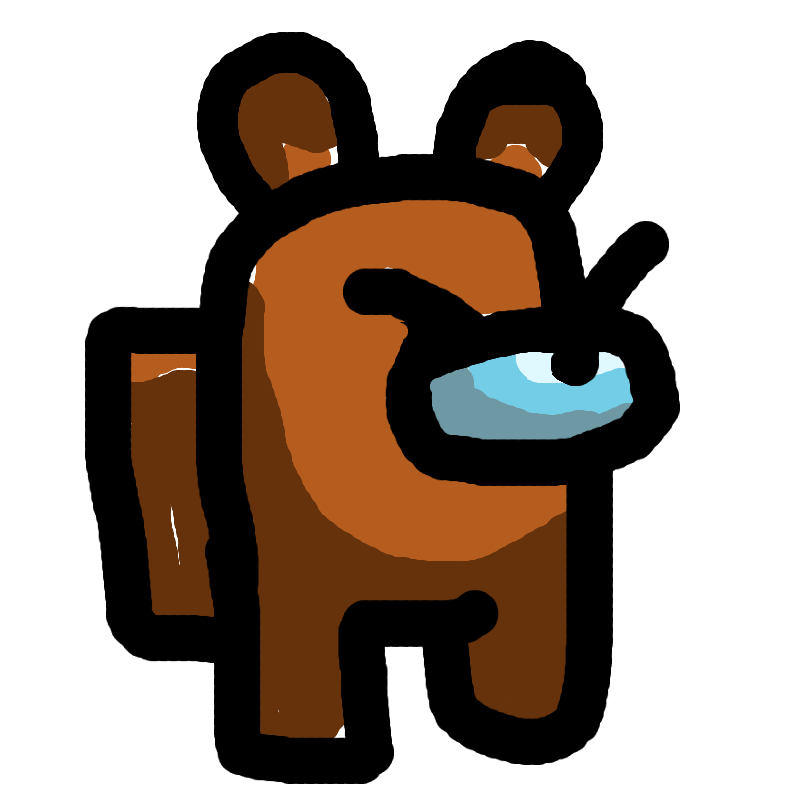

Among Us is a popular online multiplayer video game by Innersloth.
It can be played with 4-15 people (a lobby) across multiple platforms (PC, Mobile, Playstation, xBox, even in VR!).
The game itself is heavily inspired by "Mafia" and "Clue", where players try to solve a
murder mystery like scenario. Players play as Crewmates on a spaceship, trying to
figure out who the Imposters are to save their ship (and their lives).

Marcus B. & Kristi A. (2018). Among Us. (Version 2022.8. 23) [Video Game]. Innersloth.
The game can be played with 4-15 players. When the game starts, each player is randomy assigned a role, either
Crewmate (3-14 players) or Impostor (1-3 players). Imposters will know who their teammates are, while Crewmates will not. Players are then released onto the selected map and start the game.
This is where the social deduction part comes into play. As Crewmates are doing their tasks and filling up the task bar, Impostors need
to blend in and appear innocent (while killing off unsuspecting Crewmates). When a player finds a dead body, an emergency meeting is called.
Here, the players discuss who they think the culprit is. The players are then given a chance to vote someone off - whoever gets
majority votes will be ejected off the ship. During these meetings, Imposters try their best to not seem suspicious as everyone else goes over
what they were doing, where they were, etc.
Crewmates can only really do tasks and run around. Impostors, on the other hand, have a variety of new buttons. They're able to shut doors,
call sabotages, crawl in the vents, as well as kill Crewmates.
Marcus B. & Kristi A. (2018). Among Us. (Version 2022.8. 23) [Video Game]. Innersloth.
There are a couple ways for each team to win:
Crewmates:
Complete all their tasks (see Maps and Tasks for more info)
Vote out all of the impostors
Impostors:
Sabotage the Crewmates (see Maps and Tasks for more info)
Kill or vote off Crewmates (They win when the number of remaining Impostors tie the number of remaining Crewmates)
Lore
There are multiple theories that try to explain what exactly is going on in Among Us.
Here's an outline detailing everything we know about these strange space aliens.
We know Impostors are parasites - this was confirmed by the developers. Many people speculate they're able to shapeshift,
turning themselves into recognizable Crewmates. They're also immune to oxygen and light sabotages, leading many to make the
the connection that they have night vision and don't need to breathe. Additionally, it's likely that the Impostors had some control over
the SKELD ship, even before the Crewmates. The main evidence for this is the Impostor sabotage menu.
Why would they have access to the control panel when Crewmates don't? Why can they vent all over the ship while Crewmates can't?
People also can't make up their minds when it comes to the incentive of the Crewmates. Going with what we've clarified above, it's natural to
think the Crewmates are actually the bad guys, looting everything the Impostors have ever owned. The Impostors, on the other hand, are just
trying to keep their ship protected. It's also possible the crewmates are just researchers studying space - MIRA HQ is their headquarters, the SKELD ship
flies them through space and towards the POLUS planet.
To this day, we still don't know what the real story behind Among Us is. The developers are yet to confirm many details and fan theories. Currently,
it's all up to the players to decide on the true meaning behind the game.
Here are some Youtube Videos going over a couple of theories:
Customization

Chen, M. (2023). Among Us. [Digital Artwork Inspired by Among Us]. Personal collection.
Among Us also allows players to express themselves through their in-game avatars. Players are able to put on various hats,
suits, and other accessories. Some items (pets, certain outfits), however, are only accessible through the paid version of the game.
The game is heavily centred around the idea that every player is a different colour, making it easy to differentiate between players
and figure out who was where. Players tend to refer to others by their colour, whether that be in the game chat or through a voice call.
It's usually used in place of a player's name/username. Examples include asking for "Red's" location instead of "coolgamer123's" location.
Players are able to choose their colours in the lobby before the game starts, as well as equip any accessories they may want to wear.
Some accessories have special features. This includes all of the pets, where the pet will sit and never move if their owner dies.
It's quite sad, but adds a nice detail for others to notice, sometimes helping Crewmates find the
Impostors faster.
The new update introduced something called a Cosmicube. It's like a Fortnite Battle Pass,
where you're able to unlock more rewards the
more you play and complete objectives. Some cosmetics are locked behind these rewards, like the ability to change your name background.